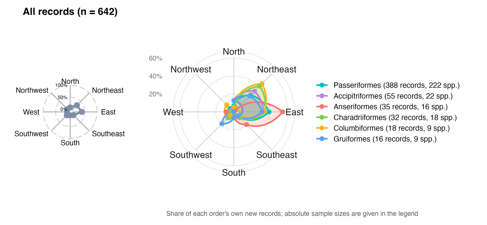
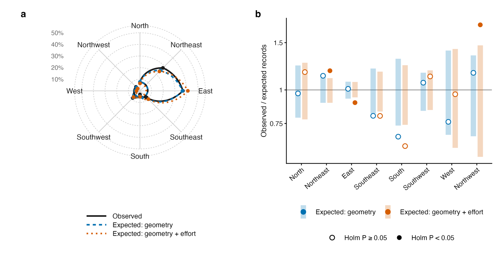
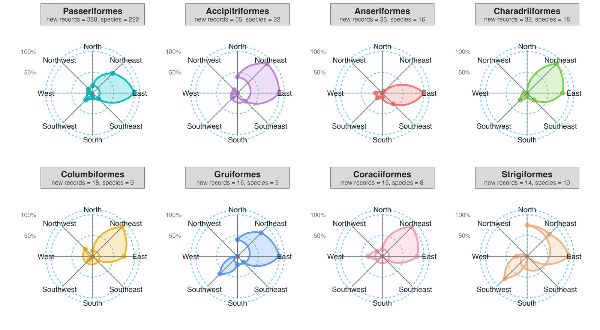
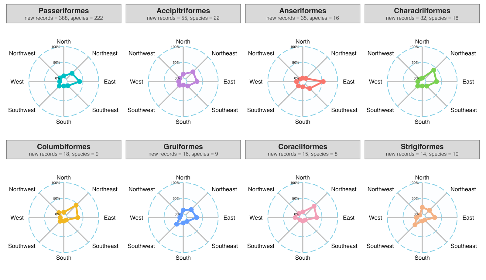
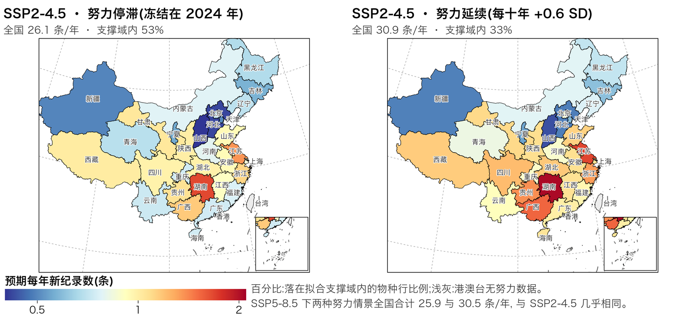
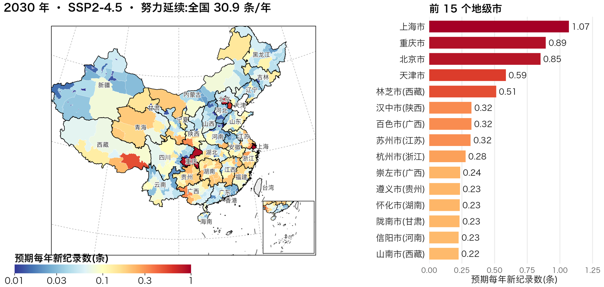

01工作流总览
一条新纪录是三件事的乘积:物种在该省出现、有人发现并记录、发现被发表。工作流把三个环节拆开,分别交给模型的一个分量,再用零模型、重抽样和支撑域检查结论能走多远。
02研究背景
新分布纪录常被当作分布区随气候移动的证据;中国省级鸟类新纪录汇编也被解读为向北、向高纬扩张的信号。但只有“物种出现”是生态过程,不完全探测与不均匀采样本身就能在没有真实变化的地方制造“分布区变化”。
观测与增温同步增长:中国大陆 eBird 与中国观鸟记录中心的年观鸟访问量从 2002–2004 年均 493 次增至 2022–2024 年均 99,156 次,约 200 倍。许多“新”纪录只是填补知识空白(华莱士短缺)。机会性记录只有在记录过程被建模时才能给出无偏趋势,而首次记录汇编此前从未这样分析。
约 200 倍
年观鸟访问量增幅(2002–04 → 2022–24)
1,029 条
CBNR v2 省级新纪录,带发现日期与发表年
2.09 年
平均发表滞后;81.7% 的记录滞后至少一年
03研究空缺与不足
三个环节各自在数据中留下特征,已有分析没有把它们分开。四个空缺及本研究的对策:
1时间:按发表年定年
- 发表滞后于发现,而观测逐年增长,记录被计入观测者更多的年份
- 近年发现尚未发表,末端年份不完整;偏差大小从未被测量
2尺度:观测的省 × 年脉冲
- 调查活动、观鸟节、新保护区或平台使某省某年记录骤增
- 只含物种与地区随机效应的模型无法表示这种脉冲
3基准:气候效应与谁比较
- 以物种分布区为参照的增温效应,应与“物种身份不含信息”时的共享区域气候效应比较
- 这一基准不一定等于 1
4外推:投影的支撑域
- 气候情景下的投影很少检查是否超出拟合范围
- 未来增温差远超历史梯度(SD 0.18 °C)
数据层面另有两个常被忽视的不足:努力数据中的“零”不都是真零(24 个大陆省-年);单一数据源可能存在下载缺口(见“质控与复现”中的 2024 年审计实例)。
04科学问题与假设
四个预测在稳健性分析之前写定,每一个都对应一个检验:
05数据来源
| 数据类型 | 来源 | 内容与规模 | 用途 |
|---|---|---|---|
| 新纪录 | CBNR v2(Ding et al., 2026) | 1,029 条省级新纪录,2000–2025;发现日期与发表年;LLM 辅助抽取 + 逐条人工核验 | 事件与定年 |
| 气候 | WorldClim 2.1 降尺度 CRU TS 4.09 | 10′ 月均温,1980–2024;四个温度指标 | 增温梯度、年际变率 |
| 调查努力 | eBird/GBIF + 中国观鸟记录中心 | 省 × 年访问、观测者、观鸟日、记录数;2024 年 eBird 由 GBIF 另行补入 | 努力协变量 |
| 物种分布 | BirdLife 分布区 + 物种分布模型 | 50/100/200 个适宜栅格阈值确定候选省 | 风险集、物种参照 |
| 性状与系统树 | 中国鸟类生态性状库、BIRDBASE、AVONET、Clements 树 | 1,445 种;1,312 种可匹配系统树 | 物种层面分析 |
| 情景与保护地 | CMIP6 四模式集合;全国自然保护区边界 | SSP2-4.5 / 5-8.5,2030/2050/2080;1,028 处保护区 | 投影、保护地模块 |
06方法与分析
主模型
C、E、V 为标准化的累积增温、调查努力与年际变率;u、v、w 分别为物种、省、省 × 年随机截距;系数为每 1 SD 的风险比。模型用 glmmTMB 拟合,随机结构在稳健性分析之前冻结。
事件定年与报告完整度
- 1,028 / 1,029 条可解析发现年;10 条以“发表年 − 中位滞后 1 年”替代并标记。
- 每个物种 × 省只保留最早事件;早于 2002 年者视为已存在,移出风险集。
- 完整度 c(t) = F(Pmax − t),F 为非负滞后的经验分布,Pmax = 2025;c(2002) = 0.997,c(2024) = 0.567。
- 观测风险 ≈ c(t)·h(t),在 cloglog 下恰为偏移 log c(t);定年改变 83.1% 的事件年份。
风险集构建
候选省 = SDM 标出至少阈值数量适宜栅格(中位 18.3 km²)的省 + 实际有记录的省;每个物种 × 省从 2002 年起每年一行,首次记录后退出。50 栅格阈值:8,319 对、185,478 行、657 个事件;建模样本 175,640 行、649 个事件、392 种、31 省。
气候变量:物种参照的增温梯度
目标省比物种历史分布区多增温多少;基线 1980–2000。clim_change 为 x 的 15 年滑动均值,clim_var 为残差。敏感性:4 个指标 × 4 个窗口、3–23 年细网格、3 个基线。
调查努力与缺失数据规则
- 四个代理(访问、观测者、观鸟日、记录数),log1p 后在分析范围内标准化;1 SD ≈ 年访问量 7.89 倍。
- 24 个恰为零的大陆省-年视为覆盖缺口(主分析缺失);敏感性采用补零与对数尺度插补。
- 2024 年 eBird 由 GBIF 补入;广东 2024 年仅 14 天数据,作为下载缺口处理。
随机结构选择(六种结构 × 四类准则)
| 结构 | ΔAIC | McFadden R² | 边际 R² | 条件 R² | 条件 AUC |
|---|---|---|---|---|---|
| R0 物种 | 160.6 | 0.015 | 0.113 | 0.187 | 0.688 |
| R1 + 省 | 95.5 | 0.023 | 0.129 | 0.279 | 0.722 |
| R2 + 年 | 73.1 | 0.025 | 0.085 | 0.282 | 0.737 |
| R3 + 省 × 年(主模型) | 3.3 | 0.033 | 0.088 | 0.413 | 0.853 |
| R4 + 物种增温斜率 | 2.6 | 0.034 | 0.085 | 0.405 | 0.864 |
| R5 + 省努力斜率 | 0.0 | 0.034 | 0.088 | 0.400 | 0.851 |
R4、R5 的 AIC 略低,但条件 R² 更低、固定效应几乎相同,因此冻结最简约、条件 R² 最高的 R3。
稳健性与扩展分析
- 分步分解 S0–S5:每次只改一个选择(发现年定年 → 覆盖缺口 → 面积加权气候 → 完整度偏移 → 省 × 年)。
- 敏感性网格:指标 × 窗口;3–23 年细网格(最优 18–20 年);3 个基线;12 种努力设定;3 个 SDM 阈值。
- 扩展:迁徙策略分层;物种层面系统发育逻辑回归;省级负二项与层次分割;方位几何零假设;保护地模块;随机森林与 XGBoost 对比、市县降尺度。
零模型、重抽样与诊断
| 类别 | 设计 | 结果 |
|---|---|---|
| 置换零模型 | N1 打乱物种的增温;N2 打乱努力的年份;N3 打乱事件落在哪个物种;各 199 次 | 增温零分布中位 1.161;物种特异增量约 1.18;N2 下努力 HR 0.979 |
| 聚类自助 | 物种(392 簇)与省(31 簇)各 300 次 | 省级:增温 1.20–1.72、努力 1.24–1.78;标准误放大 1.30–1.53 倍 |
| 参数自助 | 150 次,含随机效应重抽 | 偏倚 ≤ 0.008;覆盖率 92.0–93.3% |
| 影响分析 | 逐省与物种十等分留一,41 次 | 最大偏移 3.9% |
| 残差诊断 | DHARMa、Moran's I、比例风险 | KS P = 0.86;离散 P = 0.51;Moran's I = −0.042(P = 0.76) |
投影与外推边界
- CMIP6 四模式集合中位增温差加到增温梯度两端;努力按每十年 0.30 / 0.60 SD 增长;另设 2 × 2 × 2 情景网格。
- 省 × 年取期望、偏移取 log 1,投影潜在生成风险;支撑域为拟合样本 1–99% 分位,主图只汇总域内单元。
- 机制模型与 XGBoost(TreeSHAP 解释)对比方向一致性。
07质控与复现
脚本按编号顺序运行,每一步只读上一步落盘的结果:
修正前快照
重跑前对数据、结果表与文稿整体快照,任何数字都可回溯旧值。
数字追踪映射
171 个片段模板,旧值须在原文逐字命中才算口径一致;156 个数值随修正改变。
打包质检
三版关键数字一致、引文完整、占位符清单、上传件齐全;0 失败才放行。
冒烟测试
由分发数据重拟合主模型,复现 HR 1.365 / 1.429 / 0.839 与 AIC 8,308.5。
独立复核
只读核查代理逐段回溯约 350 个数字,未见残留旧值。
公开与归档
GitHub 仓库与 data_and_code 快照;CBNR v2 已在 Zenodo 发布。
审计实例:2024 年调查努力
| 步骤 | 内容 |
|---|---|
| 发现 | 云南 2024 年访问 5 次(2023 年 1,802 次),广东骤降,而记录数口径平稳 |
| 根因 | eBird/GBIF 事件文件止于 2023 年;广东 2024 年中国观鸟记录中心只有 14 天 |
| 修正 | 从 GBIF 补入 eBird 2024(同一访问定义,对 2023 年逐值复现);广东 2024 年按下载缺口处理 |
| 影响 | 建模行 175,901 → 175,640;努力 HR 1.404 → 1.429;增温 1.362 → 1.365;交互 0.849 → 0.839;结论不变 |
08主要结果
修正定年并显式建模观测后,增温与调查努力贡献相当且负交互;四个预测全部得到支持。记录的日期决定哪一个“看起来”占主导。
主模型固定效应
每 1 SD 的风险比与 95% Wald 区间(对数刻度);虚线为增温零分布中位 1.16
调查努力的回报在下降
时变模型中努力 HR 的线性(对数尺度)趋势;端点为 95% 区间
投影只在支撑域内解读
落在拟合样本增温与努力 1–99% 分位内的物种 × 省单元比例
努力比增温更早出界(2024 年努力已是观测最高值);机制模型与 XGBoost 在支撑域外的方向一致率仅 8.6%。
| 假设 | 结论 | 证据 |
|---|---|---|
| H1 定年偏差 | 支持 | 发表年定年使努力 HR 虚高 37%(1.79 对 1.31),制造年际变率伪效应(0.85);累积增温 1.39 → 1.44 |
| H2 观测脉冲 | 支持 | 省 × 年为最大方差分量(σ = 0.798,风险 × 2.22);条件 AUC 0.72 → 0.85,边际判别力不变 |
| H3 负交互 | 支持 | 交互 HR 0.84(0.75–0.94) |
| H4 回报递减 | 支持 | 努力 HR 2.14(1.61–2.85)→ 1.13(0.93–1.37);增温回报无可检出变化 |
稳健性
12 种努力设定下增温 HR 1.33–1.39;三个 SDM 阈值结果一致。
物种与迁徙
部分迁徙鸟产生新纪录的几率约为留鸟两倍(OR 1.89–2.50);迁徙策略不调节任一驱动因子。
方位
“偏东”可由地理几何完全复现;扣除几何与努力后略偏北(40.2% 对期望 32.8%)。
新纪录的方位
方位以物种全球分布区质心为原点、自正北顺时针划为八个 45° 扇区;图件由脚本 154 用现行发现年定年事件重绘,作图代码沿用此前鸟类方位分析的雷达图与风玫瑰。642 条记录中,东(36.9%)与东北(27.9%)占六成以上。

均匀分布不是合适的零假设:对多数物种,中国的候选省本来就在其全球分布区质心的东侧。把每条记录随机放回该物种的候选省,东侧三个扇区的期望份额为 71.4%,与观测的 72.9% 几乎相同;按调查努力加权后为 74.9%。剩下的信号是北侧略多:观测 40.2%,两种零假设期望分别为 36.6% 与 32.8%。



未来情景预测地图
地图按 CBNR 数据论文的规范绘制:Albers 等积投影、虚线经纬网、十段线、右下角南海小图(审图号 GS(2019)1822);数值取自情景网格,未作改动。色带为冷暖对比的 ColorBrewer RdYlBu(对数刻度);每幅图上方给出落在拟合支撑域内的物种行比例。2030 年 SSP2-4.5 下,努力停滞与努力延续的全国预期新纪录分别为 26.1 与 30.9 条/年,换成 SSP5-8.5 为 25.9 与 30.5 条/年:2030 年前的差异主要来自观测努力。


09产出与下一步
三刊投稿包
- GCB、NEE、NC 三个版本
- 102 个可编辑图件 PPTX 与源数据
- Reporting Summary、中文摘要
数据与代码
- CBNR v2(Zenodo,CC BY 4.0)
- 100 个脚本、101 张结果表
- 冒烟测试约两分钟复现主模型
报告与传播
- AOC 2026 新加坡报告(v3、v4)
- 2002–2024 时空动图
- 本工作流文档、PPT 与网页
局限
- 汇编依赖文献发表,未发表发现与灰色文献未纳入;10 条记录的发现年为替代值。
- 努力来自 eBird 与中国观鸟记录中心,未覆盖专业调查;标准化范围含香港 16 年(只算大陆时 1 SD 为 7.80 倍)。
- 2050 年后多数单元超出拟合范围,投影只作情景演示;网格尺度受限于努力覆盖与事件数。
下一步
- 投稿前由作者确认审计报告中的措辞建议、资助与 CRediT 信息,补充 2002–2023 年 eBird/GBIF 下载 DOI。
- 按目标期刊上传投稿包;论文接收后将代码与结果表归档 Zenodo。
- 把同一框架用于两栖爬行类与哺乳类新纪录。
- 生成县级优先调查清单,并与保护区监测嫁接。